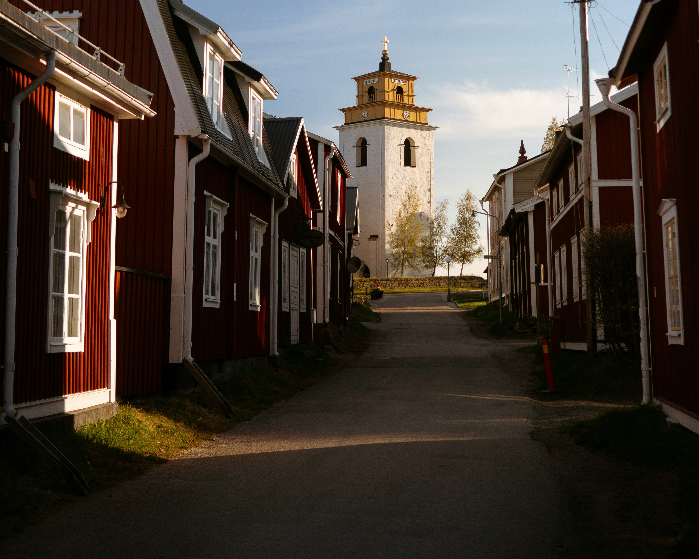

Gamla Stan
Gamla Stan är en av de bäst bevarade medeltida stadskärnorna i Europa. Här hittar du trånga gränder, färgglada byggnader, och massor av historia.
Gamla Stan är en av de bäst bevarade medeltida stadskärnorna i Europa. Här hittar du trånga gränder, färgglada byggnader, och massor av historia.

Ett perfekt stopp för en historieälskare. Här får du en resa genom stadens utveckling från 1200-talet till idag, med interaktiva utställningar.
Stadsparken är en grön oas mitt i centrum. Här kan du promenera, fika, eller bara njuta av naturen – perfekt under sommaren!